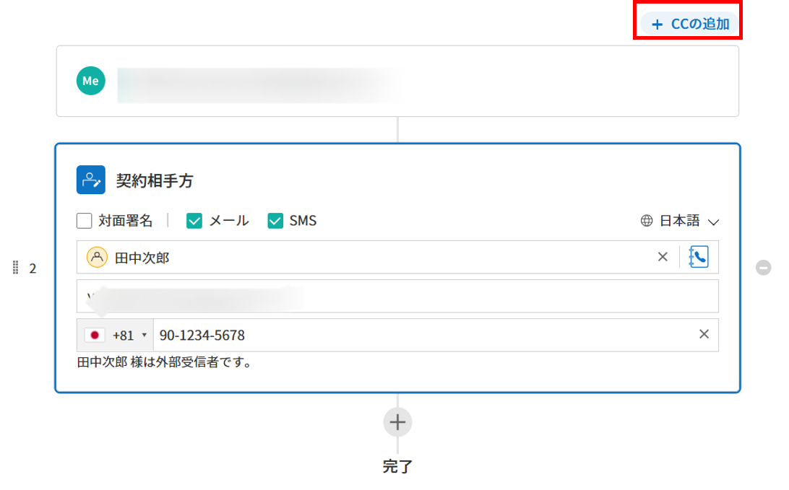
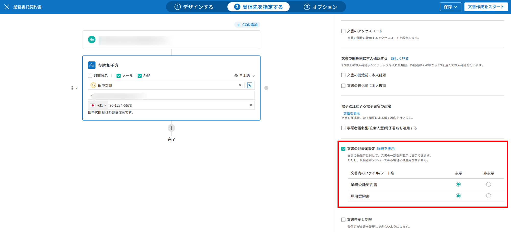
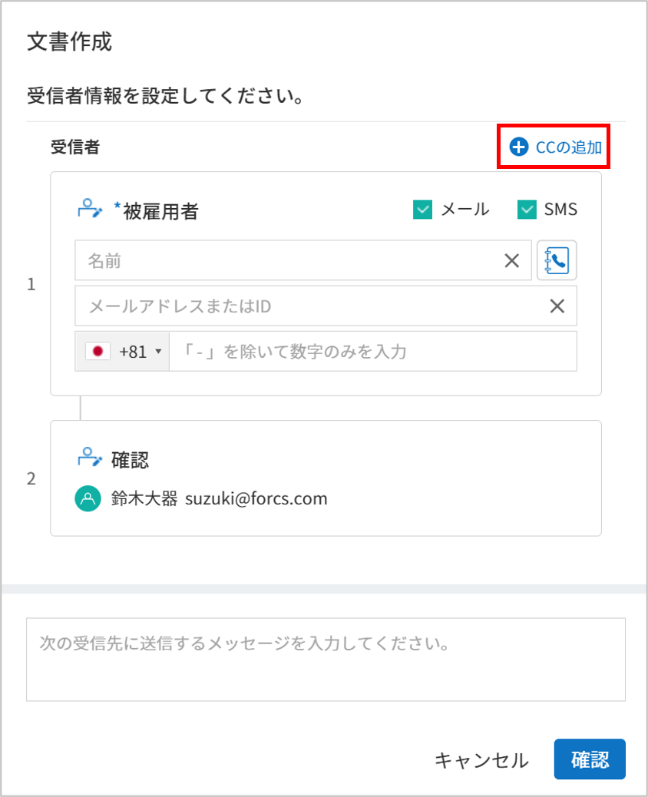

文書の新規作成
eformsignを使用することで、既存のファイルを簡単に電子文書化し、文書を作成、依頼、処理することができます。eformsignによる電子文書の作成と送信の方法は2つあります。 PCに保存されているファイルをそのままアップロードして電子文書を作成する方法と、eformsignに保存されているテンプレートを使用する方法です。
マイファイルで作成する：PC内の既存の文書ファイルを使用して文書を作成し、受信者に送信することができます。1回のみ使用する文書はこちらから作成します。
テンプレートで作成する：予め作成したテンプレートを使用して文書を作成します。このメニューをクリックすると、代表管理者/テンプレートの管理権限を持つメンバーがアップロードしたテンプレートが表示されます。
注釈
テンプレートの作成は、 代表管理者 / テンプレート管理者 の権限を持つメンバーのみ可能です。また、アップロードされたテンプレートはそのテンプレートの権限設定で 使用権限を付与されたメンバーの テンプレートで作成するの画面に表示されます。
テンプレートはWebフォームデザイナーとフォームビルダーを使用して作成することができます。 詳しくは Web フォームデザイナーと フォームビルダーをご参照ください。
Tip
マイファイルで作成するで文書作成する場合は、テンプレートを変更・保存することはできません。
❗よく使用する文書は、 テンプレート としてアップロードしておくと便利です。❗
マイファイルで作成する
使用したい文書ファイルをアップロードし、文書上の任意の位置に入力項目を配置することができます。 また、各入力項目に参加者/検討者を割り当てることで、参加者/検討者の情報を入力してから送信できます。
マイファイルで作成するメニューに移動します。
文書ファイルをアップロードします。
注釈
アップロード可能なファイル形式はpdf、hwp、doc、docx、xls、xlsx、ppt、pptx、odt、jpg、png、gif、tiffです。 アップロード可能なファイルの容量は最大9MBまでです。
文書の作成に参加する 参加者を追加し、役割を設定します。
注釈
画面中央の 参加者を追加するをクリックすると参加者を追加することが可能で、最大30人まで設定できます。
フォームデザイン後に 受信先を指定するから、追加した参加者の情報の変更、追加、削除ができます。
各参加者が入力するコンポーネントを追加し、各コンポーネントの詳細設定を右側の画面で設定します。
Tip
ファイルの追加
複数のファイルを1つの文書にまとめて送信したい場合、ファイルを追加して1つの文書にまとめることができます。 また、入力項目を維持したまま原本ファイルの変更、追加したファイルの順序変更・削除をすることもできます。
コンポーネントを追加後、受信先を指定するで文書を送信する受信者をステップごとに設定し、 受信先のオプションを設定します。

注釈
受信先を指定する設定
文書の受信者は、 参加者、検討者、閲覧者 に分けられます。文書の作成時に追加された参加者が 受信先を指定する ステップに表示され、文書の処理プロセスに応じて検討者と閲覧者を追加することができます。 受信先の指定から参加者、検討者、閲覧者を削除/追加することができます。各受信者のメールアドレスなどの連絡先情報を入力して詳細な設定を行います。
❗参加者、検討者、閲覧者の違い
参加者は文書への署名、作成など、入力項目に 入力することができます。
検討者は文書に入力することはできず、文書の検討後 承認の有無のみ決定できます。
閲覧者は文書の承認や作成することはできず、 閲覧のみできます。

❗閲覧者ステップでの文書送信設定
受信者ステップで閲覧者を選択した場合、文書送信オプションから文書を処理する方法を設定できます。
受信者が文書を閲覧したら次のステップに送信: 閲覧者ステップの受信者が文書を閲覧すると、次のステップに送信されます。
受信者の文書閲覧有無に関わらず、即時次のステップに送信: 閲覧者ステップの受信者の文書閲覧の有無に関わらず、文書が次のステップに送信されます。

Tip
CC(参照者)の追加
文書の送信時にCC(参照者)を追加することができます。CCに追加されたユーザーは文書の進行状態をモニタリングすることができ、文書が送信・完了するとCCに追加されたユーザーに通知を送ります。
❗CCには グループ/メンバーのみ指定できます。外部受信者はCCに指定することができません。
 オプションをクリックして文書のタイトル、完了文書に対するタイムスタンプの付与などを設定します。

注釈
このステップまでがフォームを設定するステップです。 文書作成をスタートをクリックする前に下書き保存して作成を終了した場合、下書きとして保存に保存されます。保存されたファイルを開くことで、以降のステップを再開することができます。文書の下書き保存は右上のメニュー (
 ) アイコンをクリックすると表示される 下書きとして保存をクリックすることで可能です。
) アイコンをクリックすると表示される 下書きとして保存をクリックすることで可能です。
全ての設定完了後、 文書作成をスタートをクリックします。

注意
文書作成をスタートをクリックした時点から課金の対象として集計されます。
文書を確認し、 送信をクリックすると、受信先に文書が送信されます。

受信先を指定する > 受信先のオプション設定
デザインする ステップで文書作成に参加する参加者(文書の受信者)を追加して各受信者の入力項目を設定します。 受信先を指定する ステップでは デザインする ステップで追加した文書参加者の連絡先を含む詳細設定を行います。参加者の順番変更・削除、文書を検討する 検討者、 閲覧者 を追加することができます。
送信するには、各受信者の名前と送信先のメールアドレス/IDを入力する必要があります。参加者がメンバーである場合、リストから選択することで登録されている情報を呼び出すことができます。
Tip
参加者、検討者、閲覧者以外にCCにユーザーを追加することができます。CCCに追加されたユーザーは文書の進行状態をモニタリングすることができ、文書が送信・完了するとCCに追加されたユーザーはメールで通知を受け取ることができます。❗**CCに追加できるのはメンバーのみ**です。
注釈
受信者オプションは参加者、検討者、閲覧者がメンバーの場合とメンバーでない(外部受信者)場合でそれぞれ異なって表示されます。 ❗受信者がメンバーとして認識されるには 名前とメールアドレス/IDが全て一致している必要があります。
受信者がメンバーである場合
文書送信手段の選択:メールとSMSの中から1つを選択または全て選択することができます。メンバーを選択すると、保存されているメールアドレスと携帯電話番号が自動入力されます。
注意
SMSは追加料金が発生します。
通知:通知メッセージの編集をクリックすると、文書を送信する際に送られる通知メール・SMSの内容を編集できます。
文書の送信期限の設定:受信者が文書を送信できる期限を設定できます。提出期限が過ぎると文書の検討と作成ができなくなります。
Tip
文書の送信期限を無期限にするには、 文書の送信期限をOO日OO時間と設定します。

受信者がメンバーではない場合
入力した情報がメンバーの情報と一致しない場合、外部受信者として次の項目について詳細オプションを設定する必要があります。
文書送信手段の選択:メールまたはSMSから選択します。SMSを選択した場合は送信先の携帯電話番号を入力する必要があります。
注意
SMSは追加料金が発生します。
通知: 通知メッセージの編集をクリックすることで、文書の送信時に送られるメール・SMSメッセージを編集することができます。また、SMSの送信方法を設定できます。
文書の送信期限の設定: 受信者が文書を送信できる期限を設定できます。提出期限が過ぎると文書の検討と作成ができなくなります。外部受信者の場合、最大50日まで設定できます。
文書の閲覧前に本人確認する: 文書の閲覧前に受信者が本人確認をし、本人確認完了に文書を閲覧できるよう設定します。アクセスコード認証と認証番号認証の2種類の認証があり、組み合わせることで二段階認証の認証が可能です。
文書のアクセスコード: 文書の閲覧時に入力するアクセスコードを設定します。アクセスコード設定は 送信者が直接入力、受信者の氏名、文書に入力された内容 の中から選択できます。また、 アクセスコードのヒントを設定しておくことで、入力時にヒントを表示することができます。
送信者が直接入力: 閲覧時に必要なアクセスコードを入力します。アクセスコードのヒントには受信者が分かりやすい文章を入力しておくことをお勧めします。
受信者の氏名: 受信欄に入力した氏名をアクセスコードとします。
文書に入力された内容: 文書内の入力項目を選択し、選択した項目に入力された値をアクセスコードとします。

メールやSMSで認証番号を送信: 受信者のメールアドレスまたは電話番号宛てに6桁の認証番号を送信します。受信者は認証番号を入力後、文書の閲覧が可能となります。

Tip
文書の完了後にも、文書の閲覧時に認証を行うよう設定するには、完了文書の検討する際にも認証を行うにチェックを入れてください。
注釈
❗SMSで認証番号を送信する場合、追加費用が発生します。
注釈
❗閲覧者ステップでの文書送信オプション設定
受信者ステップで閲覧者を選択すると、右側の 受信先のオプション > 文書送信オプションから、処理の方法を設定できます。
受信者が文書を閲覧したら次のステップに送信: 閲覧者ステップの受信者が文書を閲覧すると、文書が次のステップに送信されます。
受信者の文書閲覧有無に関わらず、即時次のステップに送信: 閲覧者ステップの受信者が文書を閲覧したかに関わらず、文書が次のステップに送信されます。
文書の非表示設定
Tip
ファイルの追加と受信者ごとのファイル表示/非表示
複数のファイルを1つの文書にまとめて送信することができます。

{kind=link}
{kind=link}
{kind=link}
{kind=link}
{kind=link}
{kind=link}
追加した各ファイルを、指定した受信者に表示/非表示するよう設定できます。 ❗ただし、受信者が社内メンバーの場合、非表示設定は適用されません。
ファイル追加をクリックし、ファイルを追加します。
受信者先を指定するステップで、当該ステップの 受信先のオプションから 文書の非表示設定オプションにチェックを入れます。
文書内のファイルごとに 表示、非表示を選択します。
表示: 選択したステップの受信者に対して文書を表示します。
非表示: 選択したステップの受信者に対して文書を表示しません。

{kind=link}
オプション設定
最後のステップであるオプション設定では、文書タイトルの作成、通知の設定・編集をすることができます。また、タイムスタンプの付与も可能です。

文書のタイトル: 文書のタイトルを設定します。設定した文書のタイトルで文章を送信・文書トレイに保管します。
通知の設定: 文書の進行状態と文書の完了に関する通知を受け取る受信者の設定、通知メッセージのプレビュー・編集ができます。
文書の完了通知の編集

通知テンプレートの選択: 通知テンプレートはデフォルトで設定されており、別途作成したテンプレートがあれば変更することができます。新規テンプレートの追加方法は 알通知テンプレート管理をご参照ください。
メールのタイトル: 文書の完了時に送信するメールのタイトルを設定します。
SMS: 文書の完了通知をSMSで送信する場合に、SMSで送信するメッセージを設定します。設定したメッセージと同時に文書を閲覧できるリンクが送信されます。
注釈
メッセージの長さは最大65バイト(全角32文字、半角65文字)までです。
文書の添付/ダウンロード、添付方法: 完了通知と一緒に送るファイルと、その添付方法を選択します。
文書閲覧リンク: 完了文書がリンク(ボタン)形式でメールまたはSMS通知と一緒に送信されます。リンク(ボタン)をクリックすると文書閲覧ページが開きます。閲覧ページでは完了文書の閲覧とダウンロードができます。
ファイル添付: メールにPDFファイルを添付して送信します。ただし、添付ファイルのサイズが10MBを超えたり.SMSによる通知の場合は 文書閲覧リンク 形式で送信されます。
注意
ファイル添付 形式でメール通知を送ると、メールに完了文書を添付して送信します。そのため文書の閲覧前に本人確認をするように設定したとしても、本人確認せず文書を閲覧/ダウンロードすることができるためご注意ください。
本文の編集: 通知メッセージの内容を編集します。
完了文書にタイムスタンプを付与する: 完了文書にタイムスタンプが適用されるよう設定します。
注釈
💡 タイムスタンプとは？
タイムスタンプとは、電子文書の作成時点確認（存在証明）と真正性確認（内容証明）のための公開鍵基盤（PKI）の国際標準技術です。電子文書がある特定の時刻に存在していたことを証明するとともに、その時刻以降にデータが変更されていないことを証明する電磁的技術です。
文書にタイムスタンプを適用すると、特定の時点でその文書が存在し、それ以降変更されていない原本であることが認証機関によって客観的に証明されます。
テンプレートで作成する
よく使用するフォームをテンプレート化しておくと、ワークフロー（文書の処理プロセス）等の設定をテンプレートごとに保存できるため、次回の作業時にすぐに文書の作成・送信ができます。テンプレートは Webフォームデザイナーまたは フォームビルダーを使って作成できます。詳しくは Webフォームデザイナー と フォームビルダー をご参照ください。
注釈
文書の作成は、テンプレート管理の権限を持つメンバーが テンプレートの設定 > 権限の設定から テンプレートの使用権限(=文書の作成権限) を付与したグループ/メンバーのみ可能です。テンプレートの使用権限を付与されたグループ/メンバーの テンプレートで作成するリストでのみ、そのテンプレートが表示され、作成することができます。
ダッシュボードまたはサイドバーのメニューから テンプレートで作成するをクリックします。

使用したいテンプレートの作成アイコン(
 ) をクリックします。
) をクリックします。
右上の 送信をクリックすると次のステップの受信者情報を入力するポップアップウィンドウが表示されます。
注釈
テンプレートに設定されているワークフローによって、送信または 完了ボタンが表示されます。
重要
テンプレートで作成する途中で 下書き保存ボタンをクリックして下書き保存した文書は、 下書きとして保存トレイではなく、 要処理文書で確認することができます。
下書き保存した文書の作成を続けたい場合は 要処理文書のリストから下書き保存した文書の 編集をクリックして進めることができます。
受信者情報(氏名、メールアドレス/携帯電話番号)を入力し、必要に応じて添付するメッセージを入力します。ワークフローによって事前に受信者情報が設定されている場合は受信者情報の設定は不要です。
Tip
CC(参照者)の追加方法
文書の送信時にCC(参照者)を追加するにはポップアップウィンドウで CCの追加をクリックします。CCの追加ポップアップから文書を参照するメンバー/グループを選択します。
CCに追加されたユーザーは文書の進行状況をモニタリングすることができ、文書の送信・完了時に通知を受け取ることができます。 ❗CCには グループ/メンバーのみ指定できます。外部受信者はCCに指定することができません。

{kind=link}
一括作成で文書をまとめて送信する
テンプレートで文書を作成する際、 一括作成機能を使用することで、一度に複数の文書を送信できます。
注釈
この作業を行うには、 代表管理者または テンプレート使用権限が必要です。
一括作成する
文書の新規作成> テンプレートで作成するメニューに移動します。
使用するテンプレートの一括生成アイコンをクリックします。
一括作成する文書にデータを入力する方法を選択します。eformsignの画面に 直接編集または Excelファイルのアップロードをすることで、データの入力ができます。

Tip
一括作成文書データの入力方法
方法 1. データの直接編集: 最大200件まで一括作成可能
直接編集をクリックすると、eformsign画面にデータを入力できる表が表示されます。文書の入力項目1つを1列として表示します。各入力項目の名前が、各列のタイトルとして表示されます。1行を1件の文書として扱います。1列目(番号列)の最下行にある数字が、作成される文書の件数です。
表はExcelのような感覚で使用できます。各セルをダブルクリックすることで内容の入力、右クリックすることで行の追加、削除ができます。セルに入力した値をコピー、貼り付け・ドラッグ＆ドロップして入力することもできます。
{kind=link}
方法 2. ファイルのアップロード: 最大1,000件まで一括作成可能
ファイルのアップロードを選択することで、文書の入力項目が書かれたエクセルファイルをダウンロードできます。そのファイルに各入力項目のデータを入力し、アップロードします。

右上の プレビューをクリックして、作成した文書の内容を確認します。
予約送信もしくは 即時送信をクリックすると文書の一括作成が完了します。

注釈
予約送信をクリックすると、文書予約送信ポップアップが表示されます。送信する日時を選択してください。 予約送信は現在時刻を基準に、10分後から可能です。

一括作成文書で文書の送信状況等の文書に関する情報を確認します。
Tip
一括作成文書 TIP 1: 一括作成時に入力したデータエラーの確認
直接編集または ファイルのアップロードで文書を一括作成する際、入力したデータのエラーを確認することができます。不正なデータの入力や、必須項目のデータが無い場合は、データエラーとして表示されます。エラーで表示された文書は送信不可能であり、正常なデータのみ送信可能です。

Tip
一括作成文書 TIP 2: 一括作成時、要チェック!
テンプレートの入力項目のうち、一部だけ 一括作成画面に表示されない場合、以下の2つの項目を確認してください。
一括作成で入力できない入力項目: カメラ、録音、グループ化された入力項目は一括作成で入力できません。
作成ステップでアクセス許可された入力項目の確認: テンプレート管理 > テンプレートの設定(⚙) > ワークフローの設定 > そのワークフローステップで、アクセスが許可された入力項目のみ表示されます。